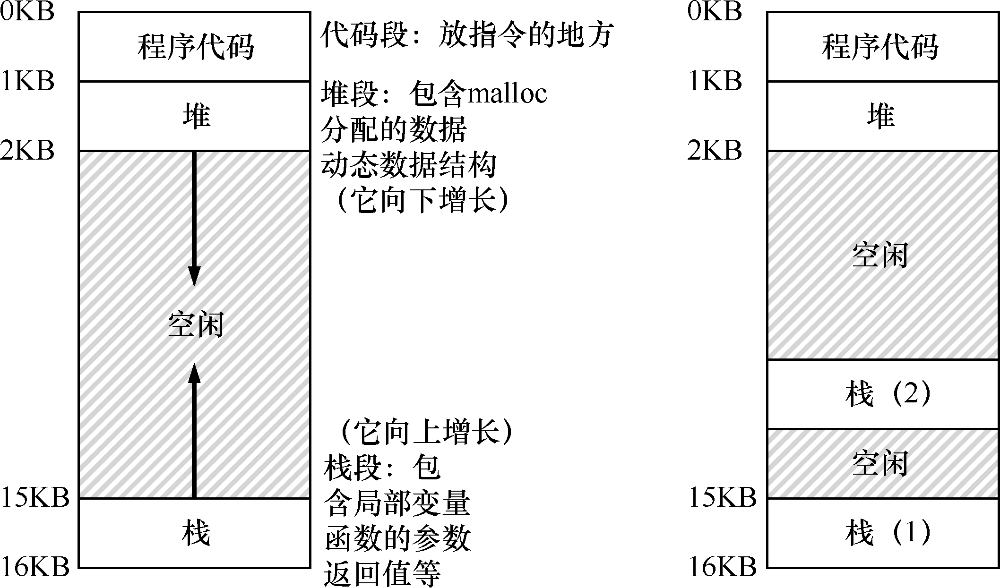
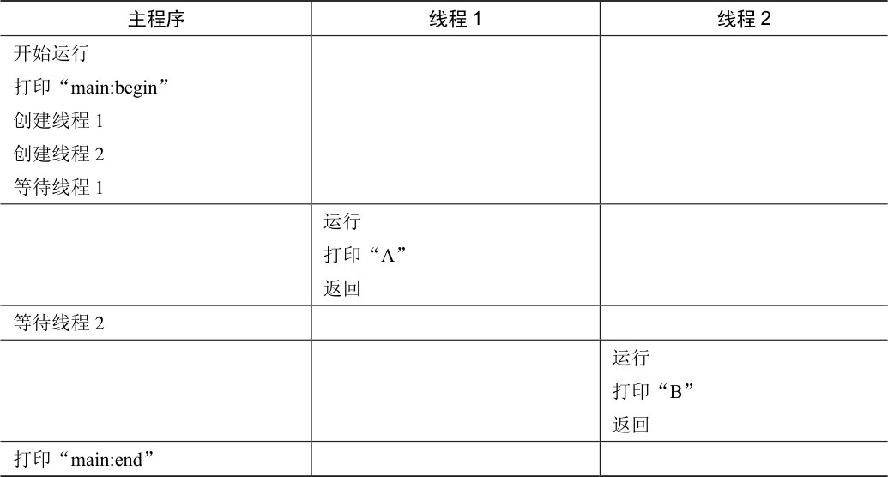
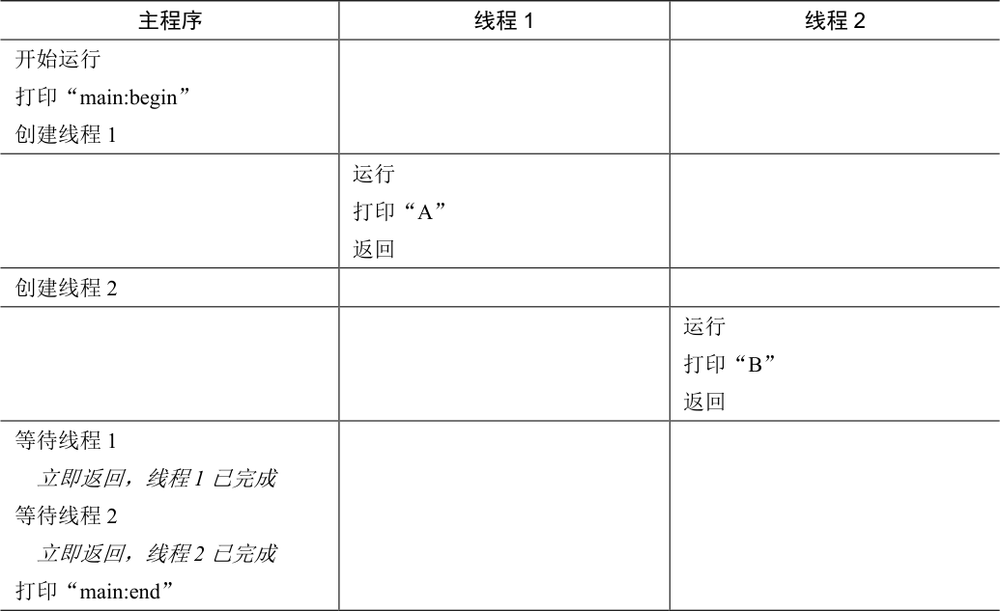
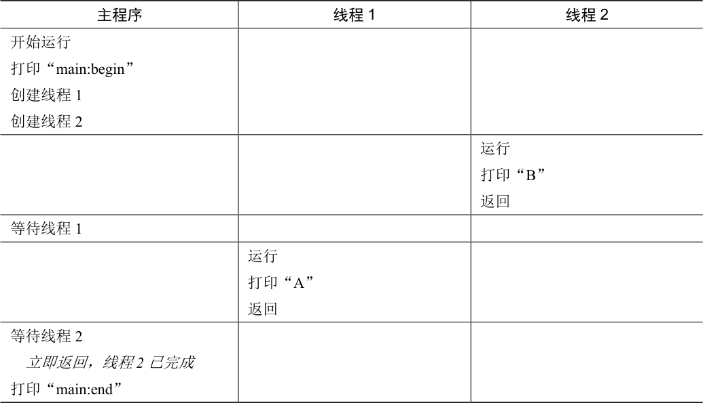
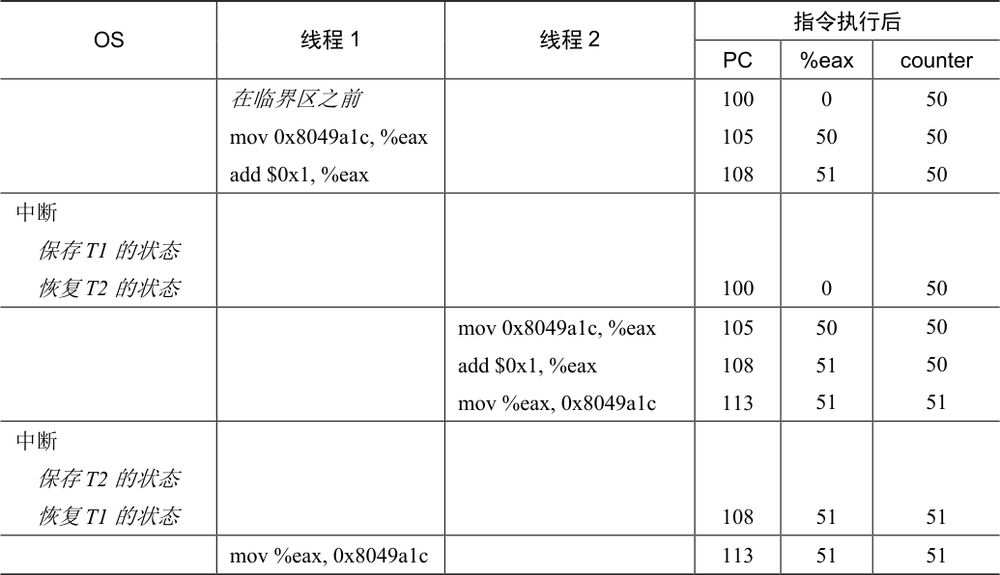

目前为止，我们已经看到了操作系统提供的基本抽象的发展；也看到了如何将一个物理CPU 变成多个虚拟CPU（virtual CPU），从而支持多个程序同时运行的假象；还看到了如何为每个进程创建巨大的、私有的虚拟内存（virtual memory）的假象，这种地址空间（address space）的抽象让每个程序好像拥有自己的内存，而实际上操作系统秘密地让多个地址空间复用物理内存（或者磁盘）。
本章将介绍为单个运行进程提供的新抽象：线程（thread）。经典观点是一个程序只有一个执行点（一个程序计数器，用来存放要执行的指令），但多线程（multi-threaded）程序会有多个执行点（多个程序计数器，每个都用于取指令和执行）。换一个角度来看，每个线程类似于独立的进程，只有一点区别：它们共享地址空间，从而能够访问相同的数据。
因此，单个线程的状态与进程状态非常类似。线程有一个程序计数器（PC），记录程序从哪里获取指令。每个线程有自己的一组用于计算的寄存器。所以，如果有两个线程运行在一个处理器上，从运行一个线程（T1）切换到另一个线程（T2）时，必定发生上下文切换（context switch）。线程之间的上下文切换类似于进程间的上下文切换。对于进程，我们将状态保存到进程控制块（Process Control Block，PCB）。现在，我们需要一个或多个线程控制块（Thread Control Block，TCB），保存每个线程的状态。但是，与进程相比，线程之间的上下文切换有一点主要区别：地址空间保持不变（即不需要切换当前使用的页表）。
线程和进程之间的另一个主要区别在于栈。在简单的传统进程地址空间模型 [我们现在可以称之为单线程（single-threaded）进程] 中，只有一个栈，通常位于地址空间的底部（见图26.1 左图）。

图26.1 单线程和多线程的地址空间
然而，在多线程的进程中，每个线程独立运行，当然可以调用各种例程来完成正在执行的任何工作。不是地址空间中只有一个栈，而是每个线程都有一个栈。假设有一个多线程的进程，它有两个线程，结果地址空间看起来不同（见图26.1 右图）。
在图26.1 中，可以看到两个栈跨越了进程的地址空间。因此，所有位于栈上的变量、参数、返回值和其他放在栈上的东西，将被放置在有时称为线程本地（thread-local）存储的地方，即相关线程的栈。
你可能注意到，多个栈也破坏了地址空间布局的美感。以前，堆和栈可以互不影响地增长，直到空间耗尽。多个栈就没有这么简单了。幸运的是，通常栈不会很大（除了大量使用递归的程序）。
26.1 实例：线程创建¶
假设我们想运行一个程序，它创建两个线程，每个线程都做了一些独立的工作，在这例子中，打印“A”或“B”。代码如图26.2 所示。
主程序创建了两个线程，分别执行函数mythread()，但是传入不同的参数（字符串类型的A 或者B）。一旦线程创建，可能会立即运行（取决于调度程序的兴致），或者处于就绪状态，等待执行。创建了两个线程（T1 和T2）后，主程序调用pthread_join()，等待特定线程完成。
#include <stdio.h>
#include <assert.h>
#include <pthread.h>
void *mythread(void *arg) {
printf("%s\n", (char *) arg);
return NULL;
}
int
main(int argc, char *argv[]) {
pthread_t p1, p2;
int rc;
printf("main: begin\n");
rc = pthread_create(&p1, NULL, mythread, "A"); assert(rc == 0);
rc = pthread_create(&p2, NULL, mythread, "B"); assert(rc == 0);
// join waits for the threads to finish
rc = pthread_join(p1, NULL); assert(rc == 0);
rc = pthread_join(p2, NULL); assert(rc == 0);
printf("main: end\n");
return 0;
}
图26.2 简单线程创建代码（t0.c）
让我们来看看这个小程序的可能执行顺序。在表26.1 中，向下方向表示时间增加，每个列显示不同的线程（主线程、线程1 或线程2）何时运行。

表26.1 线程追踪（1）
表格文字
| 主程序 | 线程1 | 线程2 |
|---|---|---|
| 开始运行 打印“main:begin” 创建线程1 创建线程2 等待线程1 | ||
| 运行 打印“A” 返回 | ||
| 等待线程2 | ||
| 运行 打印“B” 返回 | ||
| 打印“main:end” |
但请注意，这种排序不是唯一可能的顺序。实际上，给定一系列指令，有很多可能的顺序，这取决于调度程序决定在给定时刻运行哪个线程。例如，创建一个线程后，它可能会立即运行，这将导致表26.2 中的执行顺序。

表26.2 线程追踪（2）
表格文字
| 主程序 | 线程1 | 线程2 |
|---|---|---|
| 开始运行 打印“main:begin” 创建线程1 | ||
| 运行 打印“A” 返回 | ||
| 创建线程2 | ||
| 运行 打印“B” 返回 | ||
| 等待线程1 立即返回，线程1 已完成 等待线程2 立即返回，线程2 已完成 打印“main:end” |
我们甚至可以在“A”之前看到“B”，即使先前创建了线程1，如果调度程序决定先运行线程2，没有理由认为先创建的线程先运行。表26.3 展示了最终的执行顺序，线程2 在线程1 之前先展示它的结果。

表26.3 线程追踪（3）
表格文字
| 主程序 | 线程1 | 线程2 |
|---|---|---|
| 开始运行 打印“main:begin” 创建线程1 创建线程2 | ||
| 运行 打印“B” 返回 | ||
| 等待线程1 | ||
| 运行 打印“A” 返回 | ||
| 等待线程2 立即返回，线程2 已完成 打印“main:end” |
如你所见，线程创建有点像进行函数调用。然而，并不是首先执行函数然后返回给调用者，而是为被调用的例程创建一个新的执行线程，它可以独立于调用者运行，可能在从创建者返回之前运行，但也许会晚得多。
从这个例子中也可以看到，线程让生活变得复杂：已经很难说出什么时候会运行了！没有并发，计算机也很难理解。遗憾的是，有了并发，情况变得更糟，而且糟糕得多。
26.2 为什么更糟糕：共享数据¶
上面演示的简单线程示例非常有用，它展示了线程如何创建，根据调度程序的决定，它们如何以不同顺序运行。但是，它没有展示线程在访问共享数据时如何相互作用。
设想一个简单的例子，其中两个线程希望更新全局共享变量。我们要研究的代码如图26.3所示。
#include <stdio.h>
#include <pthread.h>
#include "mythreads.h"
static volatile int counter = 0;
//
// mythread()
//
// Simply adds 1 to counter repeatedly, in a loop
// No, this is not how you would add 10,000,000 to
// a counter, but it shows the problem nicely.
//
void *
mythread(void *arg)
{
printf("%s: begin\n", (char *) arg);
int i;
for (i = 0; i < 1e7; i++) {
counter = counter + 1;
}
printf("%s: done\n", (char *) arg);
return NULL;
}
//
// main()
//
// Just launches two threads (pthread_create)
// and then waits for them (pthread_join)
//
int
main(int argc, char *argv[])
{
pthread_t p1, p2;
printf("main: begin (counter = %d)\n", counter);
Pthread_create(&p1, NULL, mythread, "A");
Pthread_create(&p2, NULL, mythread, "B");
// join waits for the threads to finish
Pthread_join(p1, NULL);
Pthread_join(p2, NULL);
printf("main: done with both (counter = %d)\n", counter);
return 0;
}
图26.3 共享数据：哎呀（t1.c）
以下是关于代码的一些说明。首先，如Stevens 建议的[SR05]，我们封装了线程创建和合并例程，以便在失败时退出。对于这样简单的程序，我们希望至少注意到发生了错误（如果发生了错误），但不做任何非常聪明的处理（只是退出）。因此，Pthread_create()只需调用pthread_create()，并确保返回码为0。如果不是，Pthread_create()就打印一条消息并退出。
其次，我们没有用两个独立的函数作为工作线程，只使用了一段代码，并向线程传入一个参数（在本例中是一个字符串），这样就可以让每个线程在打印它的消息之前，打印不同的字母。
最后，最重要的是，我们现在可以看看每个工作线程正在尝试做什么：向共享变量计数器添加一个数字，并在循环中执行1000 万（107）次。因此，预期的最终结果是：20000000。
我们现在编译并运行该程序，观察它的行为。有时候，一切如我们预期的那样：
prompt> gcc -o main main.c -Wall -pthread
prompt> ./main
main: begin (counter = 0)
A: begin
B: begin
A: done
B: done
main: done with both (counter = 20000000)
遗憾的是，即使是在单处理器上运行这段代码，也不一定能获得预期结果。有时会这样：
prompt> ./main
main: begin (counter = 0)
A: begin
B: begin
A: done
B: done
main: done with both (counter = 19345221)
让我们再试一次，看看我们是否疯了。毕竟，计算机不是应该产生确定的（deterministic）结果，像教授讲的那样？！也许教授一直在骗你？（大口地吸气）
prompt> ./main
main: begin (counter = 0)
A: begin
B: begin
A: done
B: done
main: done with both (counter = 19221041)
每次运行不但会产生错误，而且得到不同的结果！有一个大问题：为什么会发生这种情况？
提示：了解并使用工具
你应该学习使用新的工具，帮助你编程、调试和理解计算机系统。我们使用一个漂亮的工具，名为反汇编程序（disassembler）。如果对可执行文件运行反汇编程序，它会显示组成程序的汇编指令。例如，如果我们想要了解更新计数器的底层代码（如我们的例子），就运行objdump（Linux）来查看汇编代码：
prompt> objdump -d main
这样做会产生程序中所有指令的长列表，整齐地标明（特别是如果你使用-g 标志编译），其中包含程序中的符号信息。objdump 程序只是应该学习使用的许多工具之一。像gdb 这样的调试器，像valgrind或purify 这样的内存分析器，当然编译器本身也应该花时间去了解更多信息。工具用得越好，就可以建立更好的系统。
26.3 核心问题：不可控的调度¶
为了理解为什么会发生这种情况，我们必须了解编译器为更新计数器生成的代码序列。在这个例子中，我们只是想给counter 加上一个数字（1）。因此，做这件事的代码序列可能看起来像这样（在x86 中）：
mov 0x8049a1c, %eax
add $0x1, %eax
mov %eax, 0x8049a1c
这个例子假定，变量counter 位于地址0x8049a1c。在这3 条指令中，先用x86 的mov指令，从内存地址处取出值，放入eax。然后，给eax 寄存器的值加1（0x1）。最后，eax的值被存回内存中相同的地址。
设想我们的两个线程之一（线程1）进入这个代码区域，并且因此将要增加一个计数器。它将counter 的值（假设它这时是50）加载到它的寄存器eax 中。因此，线程1 的eax = 50。然后它向寄存器加1，因此eax = 51。现在，一件不幸的事情发生了：时钟中断发生。因此，操作系统将当前正在运行的线程（它的程序计数器、寄存器，包括eax 等）的状态保存到线程的TCB。
现在更糟的事发生了：线程2 被选中运行，并进入同一段代码。它也执行了第一条指令，获取计数器的值并将其放入其eax 中 [请记住：运行时每个线程都有自己的专用寄存器。上下文切换代码将寄存器虚拟化（virtualized），保存并恢复它们的值]。此时counter 的值仍为50，因此线程2 的eax = 50。假设线程2 执行接下来的两条指令，将eax 递增1（因此eax= 51），然后将eax 的内容保存到counter（地址0x8049a1c）中。因此，全局变量counter 现在的值是51。
最后，又发生一次上下文切换，线程1 恢复运行。还记得它已经执行过mov 和add 指令，现在准备执行最后一条mov 指令。回忆一下，eax=51。因此，最后的mov 指令执行，将值保存到内存，counter 再次被设置为51。
简单来说，发生的情况是：增加counter 的代码被执行两次，初始值为50，但是结果为51。这个程序的“正确”版本应该导致变量counter 等于52。
为了更好地理解问题，让我们追踪一下详细的执行。假设在这个例子中，上面的代码被加载到内存中的地址100 上，就像下面的序列一样（熟悉类似RISC 指令集的人请注意：x86 具有可变长度指令。这个mov 指令占用 5 个字节的内存，add 只占用3 个字节）：
ov 0x8049a1c, %eax
dd $0x1, %eax
ov %eax, 0x8049a1c
有了这些假设，发生的情况如表26.4 所示。假设counter 从50 开始，并追踪这个例子，确保你明白发生了什么。
这里展示的情况称为竞态条件（race condition）：结果取决于代码的时间执行。由于运气不好（即在执行过程中发生的上下文切换），我们得到了错误的结果。事实上，可能每次都会得到不同的结果。因此，我们称这个结果是不确定的（indeterminate），而不是确定的（deterministic）计算（我们习惯于从计算机中得到）。不确定的计算不知道输出是什么，它在不同运行中确实可能是不同的。
由于执行这段代码的多个线程可能导致竞争状态，因此我们将此段代码称为临界区（critical section）。临界区是访问共享变量（或更一般地说，共享资源）的代码片段，一定不能由多个线程同时执行。

表26.4 问题：近距离查看
表格文字
| OS | 线程1 | 线程2 | 指令执行后 | ||
|---|---|---|---|---|---|
| PC | %eax | counter | |||
| 在临界区之前 mov 0x8049a1c, %eax add $0x1, %eax | 100 105 108 | 0 50 51 | 50 50 50 | ||
| 中断 保存T1 的状态 恢复T2 的状态 | 100 | 0 | 50 | ||
| mov 0x8049a1c, %eax add $0x1, %eax mov %eax, 0x8049a1c | 105 108 113 | 50 51 51 | 50 50 51 | ||
| 中断 保存T2 的状态 恢复T1 的状态 | 108 | 51 | 51 | ||
| mov %eax, 0x8049a1c | 113 | 51 | 51 |
我们真正想要的代码就是所谓的互斥（mutual exclusion）。这个属性保证了如果一个线程在临界区内执行，其他线程将被阻止进入临界区。
事实上，所有这些术语都是由Edsger Dijkstra 创造的，他是该领域的先驱，并且因为这项工作和其他工作而获得了图灵奖。请参阅他1968 年关于“Cooperating Sequential Processes”的文章[D68]，该文对这个问题给出了非常清晰的描述。在本书的这一部分，我们将多次看到Dijkstra 的名字。
26.4 原子性愿望¶
解决这个问题的一种途径是拥有更强大的指令，单步就能完成要做的事，从而消除不合时宜的中断的可能性。比如，如果有这样一条超级指令怎么样？
memory-add 0x8049a1c, $0x1
假设这条指令将一个值添加到内存位置，并且硬件保证它以原子方式（atomically）执行。当指令执行时，它会像期望那样执行更新。它不能在指令中间中断，因为这正是我们从硬件获得的保证：发生中断时，指令根本没有运行，或者运行完成，没有中间状态。硬件也可以很漂亮，不是吗？
在这里，原子方式的意思是“作为一个单元”，有时我们说“全部或没有”。我们希望以原子方式执行3 个指令的序列：
mov 0x8049a1c, %eax
add $0x1, %eax
mov %eax, 0x8049a1c
我们说过，如果有一条指令来做到这一点，我们可以发出这条指令然后完事。但在一般情况下，不会有这样的指令。设想我们要构建一个并发的B 树，并希望更新它。我们真的希望硬件支持“B 树的原子性更新”指令吗？可能不会，至少理智的指令集不会。
因此，我们要做的是要求硬件提供一些有用的指令，可以在这些指令上构建一个通用的集合，即所谓的同步原语（synchronization primitive）。通过使用这些硬件同步原语，加上操作系统的一些帮助，我们将能够构建多线程代码，以同步和受控的方式访问临界区，从而可靠地产生正确的结果——尽管有并发执行的挑战。很棒，对吗？
补充：关键并发术语
临界区、竞态条件、不确定性、互斥执行
这4 个术语对于并发代码来说非常重要，我们认为有必要明确地指出。请参阅Dijkstra 的一些早期著作[D65，D68]了解更多细节。
临界区（critical section）是访问共享资源的一段代码，资源通常是一个变量或数据结构。
竞态条件（race condition）出现在多个执行线程大致同时进入临界区时，它们都试图更新共享的数据结构，导致了令人惊讶的（也许是不希望的）结果。
不确定性（indeterminate）程序由一个或多个竞态条件组成，程序的输出因运行而异，具体取决于哪些线程在何时运行。这导致结果不是确定的（deterministic），而我们通常期望计算机系统给出确定的结果。
为了避免这些问题，线程应该使用某种互斥（mutual exclusion）原语。这样做可以保证只有一个线程进入临界区，从而避免出现竞态，并产生确定的程序输出。
这是本书的这一部分要研究的问题。这是一个精彩而困难的问题，应该让你有点伤脑筋（一点点）。如果没有，那么你还不明白！继续工作，直到头痛，你就知道正朝着正确的方向前进。现在，休息一下，我们不希望你的脑细胞受伤太多。
关键问题：如何实现同步
为了构建有用的同步原语，需要从硬件中获得哪些支持？需要从操作系统中获得什么支持？如何正确有效地构建这些原语？程序如何使用它们来获得期望的结果？
26.5 还有一个问题：等待另一个线程¶
本章提出了并发问题，就好像线程之间只有一种交互，即访问共享变量，因此需要为临界区支持原子性。事实证明，还有另一种常见的交互，即一个线程在继续之前必须等待另一个线程完成某些操作。例如，当进程执行磁盘I/O 并进入睡眠状态时，会产生这种交互。当I/O 完成时，该进程需要从睡眠中唤醒，以便继续进行。
因此，在接下来的章节中，我们不仅要研究如何构建对同步原语的支持来支持原子性，还要研究支持在多线程程序中常见的睡眠/唤醒交互的机制。如果现在不明白，没问题！当你阅读条件变量（condition variable）的章节时，很快就会发生。如果那时还不明白，那就有点问题了。你应该再次阅读本章（一遍又一遍），直到明白。
26.6 小结：为什么操作系统课要研究并发¶
在结束之前，你可能会有一个问题：为什么我们要在OS 类中研究并发？一个词：“历史”。操作系统是第一个并发程序，许多技术都是在操作系统内部使用的。后来，在多线程的进程中，应用程序员也必须考虑这些事情。
例如，设想有两个进程在运行。假设它们都调用write()来写入文件，并且都希望将数据追加到文件中（即将数据添加到文件的末尾，从而增加文件的长度）。为此，这两个进程都必须分配一个新块，记录在该块所在文件的inode 中，并更改文件的大小以反映新的、增加的大小（插一句，在本书的第3 部分，我们将更多地了解文件）。因为中断可能随时发生，所以更新这些共享结构的代码（例如，分配的位图或文件的inode）是临界区。因此，从引入中断的一开始，OS 设计人员就不得不担心操作系统如何更新内部结构。不合时宜的中断会导致上述所有问题。毫不奇怪，页表、进程列表、文件系统结构以及几乎每个内核数据结构都必须小心地访问，并使用正确的同步原语才能正常工作。
提示：使用原子操作
原子操作是构建计算机系统的最强大的基础技术之一，从计算机体系结构到并行代码（我们在这里研究的内容）、文件系统（我们将很快研究）、数据库管理系统，甚至分布式系统[L+93]。
将一系列动作原子化（atomic）背后的想法可以简单用一个短语表达：“全部或没有”。看上去，要么你希望组合在一起的所有活动都发生了，要么它们都没有发生。不会看到中间状态。有时，将许多行为组合为单个原子动作称为事务（transaction），这是一个在数据库和事务处理世界中非常详细地发展的概念[GR92]。
在探讨并发的主题中，我们将使用同步原语，将指令的短序列变成原子性的执行块。但是我们会看到，原子性的想法远不止这些。例如，文件系统使用诸如日志记录或写入时复制等技术来自动转换其磁盘状态，这对于在系统故障时正确运行至关重要。如果不明白，不要担心——后续某章会探讨。
参考资料¶
[D65]“Solution of a Problem in Concurrent Programming Control”E. W. Dijkstra Communications of the ACM, 8(9):569, September 1965公认Dijkstra 的第一篇论文，他概述了互斥问题和解决方案。但是，解决方案并未广泛使用。我们将在接下来的章节中看到，需要先进的硬件和操作系统支持。
[D68]“Cooperating Sequential Processes”Edsger W. Dijkstra, 1968在他最后一个工作地点德克萨斯大学的网站上，Dijkstra 记录了很多他的旧论文、讲义和想法（为了后人）。然而，他的许多基础性工作早在多年前就在埃因霍温理工大学（Technische Hochshule of Eindhoven，THE）进行，其中包括这篇著名的关于“Cooperating Sequential Processes”的论文，该论文基本上概述了编写多线程程序必须考虑的所有问题。Dijkstra 是在以他的学校命名的操作系统“THE”上工作时做出这些研究发现的。“THE”读作THE，而不是“the”。
[GR92]“Transaction Processing: Concepts and Techniques”Jim Gray and Andreas Reuter Morgan Kaufmann, September 1992这本书是交易处理的宝典，由该领域的传奇人物之一Jim Gray 撰写。出于这个原因，它也被认为是Jim Gray的“大脑转储”，其中写下了他所知道的关于数据库管理系统如何工作的一切。难过的是，Gray 在几年前不幸去世了，我们中的许多人（包括这本书的合著者）失去了一位朋友和伟大的导师。我们在研究生学习期间有幸与Gray 交流过。
[L+93]“Atomic Transactions”Nancy Lynch, Michael Merritt, William Weihl, Alan Fekete Morgan Kaufmann, August 1993这是一本关于分布式系统原子事务的一些理论和实践的不错教材。对于一些人来说，也许有点正式，但在这里可以找到很多很好的材料。
[SR05]“Advanced Programming in the UNIX Environment”我们说过很多次，购买这本书，然后一点一点阅读，建议在睡前阅读。这样，你实际上会更快地入睡。更重要的是，可以多学一点如何成为一名称职的UNIX 程序员。
作业¶
x86.py 这个程序让你看到不同的线程交替如何导致或避免竞态条件。请参阅README文件，了解程序如何工作及其基本输入的详细信息，然后回答以下问题。
问题¶
1．开始，我们来看一个简单的程序，“loop.s”。首先，阅读这个程序，看看你是否能理解它：cat loop.s。然后，用这些参数运行它：
./x86.py -p loop.s -t 1 -i 100 -R dx
这指定了一个单线程，每100 条指令产生一个中断，并且追踪寄存器%dx。你能弄清楚%dx 在运行过程中的价值吗？你有答案之后，运行上面的代码并使用-c 标志来检查你的答案。注意答案的左边显示了右侧指令运行后寄存器的值（或内存的值）。
2．现在运行相同的代码，但使用这些标志：
./x86.py -p loop.s -t 2 -i 100 -a dx=3,dx=3 -R dx
这指定了两个线程，并将每个%dx 寄存器初始化为3。%dx 会看到什么值？使用-c 标志运行以查看答案。多个线程的存在是否会影响计算？这段代码有竞态条件吗？
3．现在运行以下命令：
./x86.py -p loop.s -t 2 -i 3 -r -a dx=3,dx=3 -R dx
这使得中断间隔非常小且随机。使用不同的种子和-s 来查看不同的交替。中断频率是否会改变这个程序的行为？
4．接下来我们将研究一个不同的程序（looping-race-nolock.s）。
该程序访问位于内存地址2000 的共享变量。简单起见，我们称这个变量为x。使用单线程运行它，并确保你了解它的功能，如下所示：
./x86.py -p looping-race-nolock.s -t 1 -M 2000
在整个运行过程中，x（即内存地址为2000）的值是多少？使用-c 来检查你的答案。
5．现在运行多个迭代和线程：
./x86.py -p looping-race-nolock.s -t 2 -a bx=3 -M 2000
你明白为什么每个线程中的代码循环3 次吗？x 的最终值是什么？
6．现在以随机中断间隔运行：
./x86.py -p looping-race-nolock.s -t 2 -M 2000 -i 4 -r -s 0
然后改变随机种子，设置-s 1，然后-s 2 等。只看线程交替，你能说出x 的最终值是什么吗？中断的确切位置是否重要？在哪里发生是安全的？中断在哪里会引起麻烦？换句话说，临界区究竟在哪里？
7．现在使用固定的中断间隔来进一步探索程序。
运行：
./x86.py -p looping-race-nolock.s -a bx=1 -t 2 -M 2000 -i 1
看看你能否猜测共享变量x 的最终值是什么。当你改用-i 2，-i 3 等标志呢？对于哪个中断间隔，程序会给出“正确的”最终答案？
8．现在为更多循环运行相同的代码（例如set -a bx = 100）。使用-i 标志设置哪些中断间隔会导致“正确”结果？哪些间隔会导致令人惊讶的结果？
9．我们来看本作业中最后一个程序（wait-for-me.s）。
像这样运行代码：
./x86.py -p wait-for-me.s -a ax=1,ax=0 -R ax -M 2000
这将线程0 的%ax 寄存器设置为1，并将线程1 的值设置为0，在整个运行过程中观察%ax 和内存位置2000 的值。代码的行为应该如何？线程使用的2000 位置的值如何？它的最终值是什么？
10．现在改变输入：
./x86.py -p wait-for-me.s -a ax=0,ax=1 -R ax -M 2000
线程行为如何？线程0 在做什么？改变中断间隔（例如，-i 1000，或者可能使用随机间隔）会如何改变追踪结果？程序是否高效地使用了CPU？